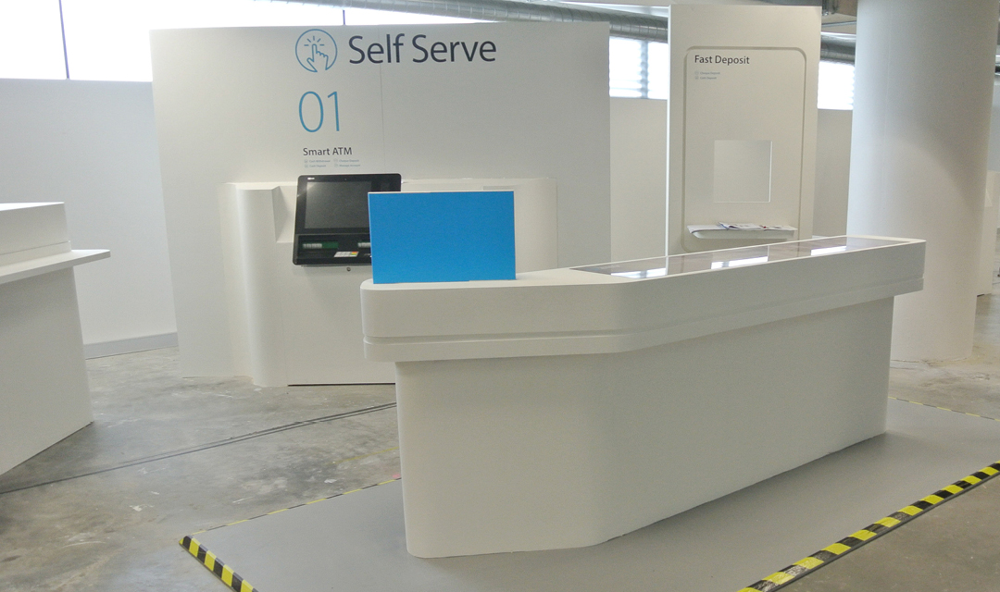

Client: Blue Sky for ANZ Bank
Project: New retail banking experience design rolled-out across Australia
Role: Research / Site Surveys / Design Workshops / Customer Flow Diagrams / Product Development
Timeline: June 2014 - Feb 2015
Context: ANZ contracted Blue Sky to design their new retail branches in Australia. As an intern, I was heavily involved in the research and development of this project. Following my internship, I continued to contribute to the project as a freelancer until its completion.

My primary role in the project was to conduct an in-depth analysis and redesign of the customer flow and branch zoning to ensure branch layouts were intuitive and space efficient.
The layout and design was prototyped and tested with a full scale, reconfigurable mock up branch in a warehouse.

Development of the design was undertaken based on a scalable, modular kit of parts model to allow mass procurement of branch fit-out components. This provided value and efficiency to ANZ and ensured that the branch designs had a consistent customer experience.

In this phase, I worked on the development of the ipad tables and triangular meeting tables to ensure they met manufacturing and ergonomic standards